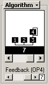

Algorithm And Feedback

Menu Button
The label for this section is a button which brings up a menu, and this is
documented in the section on Menu Buttons.
Algorithm
The algorithm determines the function of each operator in the voice. Each
numbered box in the diagram represents one operator. The operators in the
bottom row represent carriers. A carrier is an operator that produces sound
directly. Operators above the bottom row are modulators. A modulator modifies
the sound of the operators it is connected to via frequency modulation (i.e.
FM synthesis).
Feedback
The line going around operator 4 represents feedback. Feedback is the amount
of self-modulation operator 4 has.